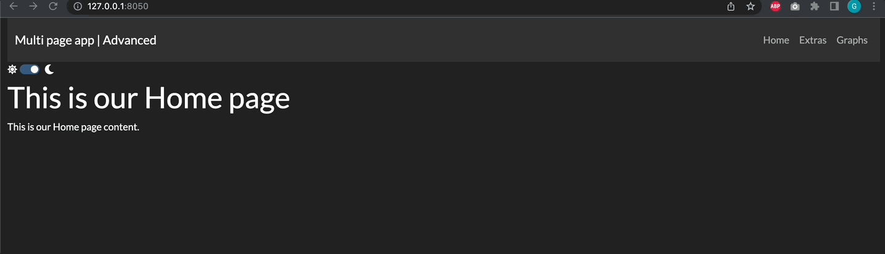

chapter 15: Advanced Features of Multi-page Apps
Contents
chapter 15: Advanced Features of Multi-page Apps¶
What you will learn¶
In this chapter we will build a more advanced multi page App, starting from the framework introduced in the previous chapter.
Learning Intentions
Visualise and navigate the
page_registryInclude images into multi-page Apps
Customise several features of multi-page Apps such as: URLs, page sort, meta tags
By the end of this chapter, you’ll be able to build the following App:
Advanced multi-page App Introduction¶
As a starting point for the chapter, let’s strt by building a multi-page App structure with all the knowledge from the previous chapter. Starting from this template, we’ll be adding a couple of features in every section.
Our starting template is be the following: 
The App structure consists in:
an
app.pyfileassetsfolder, which is currently emptypagesfolder with the following pages:Home,Graphs,Extras,About.
We want to build an App with a website-looking layout and therefore we’ve customised the app.py file in the following way:
Our header is represented by a
abc.Navbarcomponent containing the title of our App and onedbc.NavLinkfor each page in our registry.Below the header, we’ve included a
theme_togglewhich is a theme switcher. We’ve picked two themes fromdbc.themesand the switcher will allow to switch between the twoNote that when instatiating our
app, we’ve enabled theuse_pages=Trueoption and used theexternal_stylesheetsto define the default theme (which isurl_theme2and also added enhanced fonts with the optiondbc.icons.FONT_AWESOME).
The obtained app.py is the following:
See the code
from dash import Dash, html
import dash_bootstrap_components as dbc
import dash
from dash_bootstrap_templates import ThemeSwitchAIO
# Configure Themes
url_theme1 = dbc.themes.FLATLY
url_theme2 = dbc.themes.DARKLY
theme_toggle = ThemeSwitchAIO(
aio_id="theme",
themes=[url_theme2, url_theme1],
icons={"left": "fa fa-sun", "right": "fa fa-moon"},
)
dbc_css = "https://cdn.jsdelivr.net/gh/AnnMarieW/dash-bootstrap-templates/dbc.min.css"
# App
app = Dash(__name__, use_pages=True, external_stylesheets=[[url_theme2, dbc_css], dbc.icons.FONT_AWESOME])
header = dbc.Navbar(
dbc.Container(
[
html.A(
dbc.Row([
dbc.Col(dbc.NavbarBrand("Multi page app | Advanced"))
],
align="center"),
href="/",
style={"textDecoration": "none"}
),
dbc.Row([
dbc.NavbarToggler(id="navbar-toggler"),
dbc.Nav([
dbc.NavLink(page["name"], href=page["path"])
for page in dash.page_registry.values() if page["module"] != "pages.not_found_404"
])
])
],
fluid=True,
),
dark=True,
color='dark'
)
app.layout = dbc.Container([header, theme_toggle, dash.page_container], fluid=True)
if __name__ == '__main__':
app.run_server(debug=False)
Each page code is very basic and will be enhanced in the following sections.
Content:¶
Show and describe the following App as the baseline
Go through the following enhancements to the app:
Creation of a button which print out the registry on the console and examine it
Add assets folder with images and show them
Rename URLs
Sort pages differently (e.g. Graph page before Extras)
Add a meta tag example